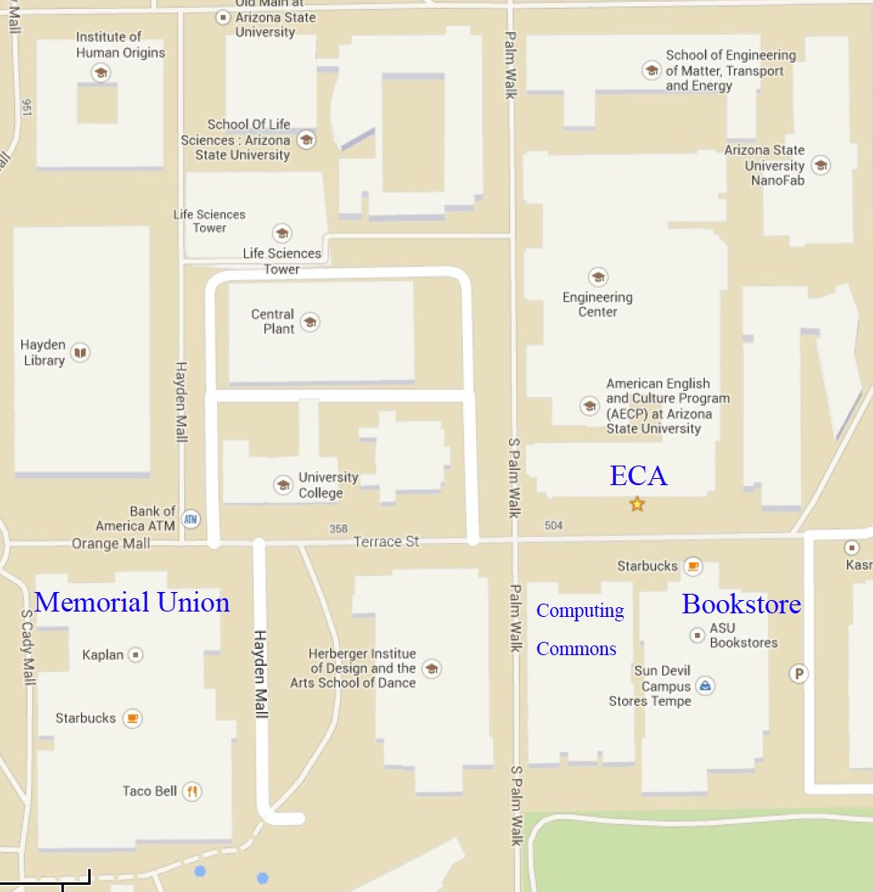
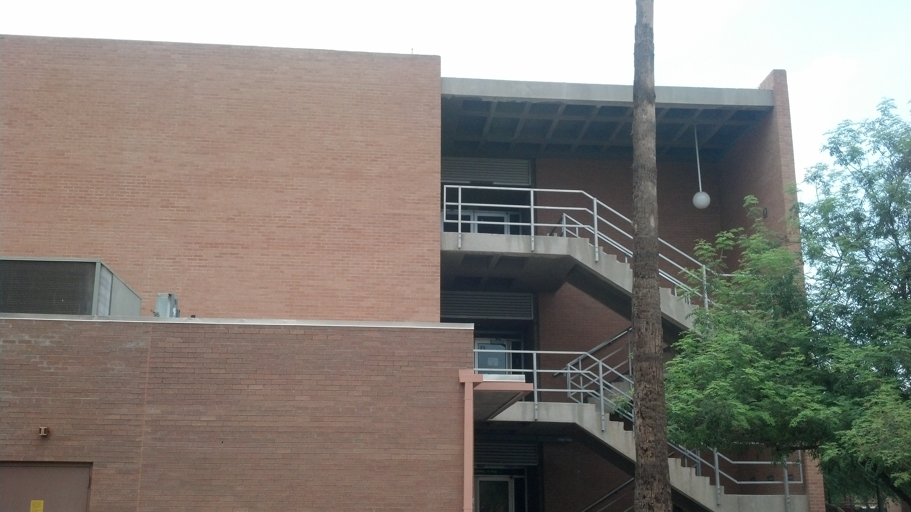
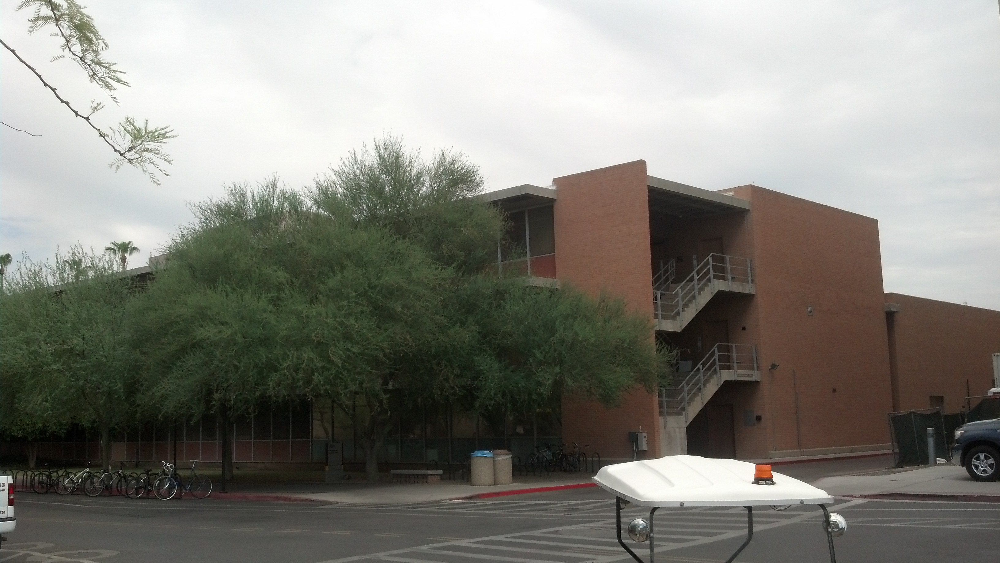
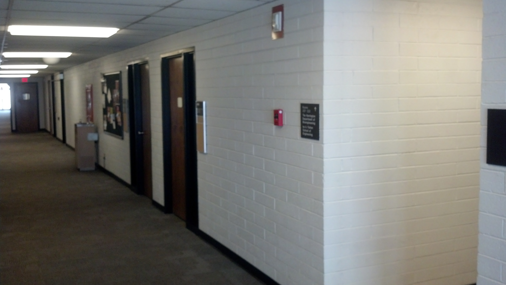
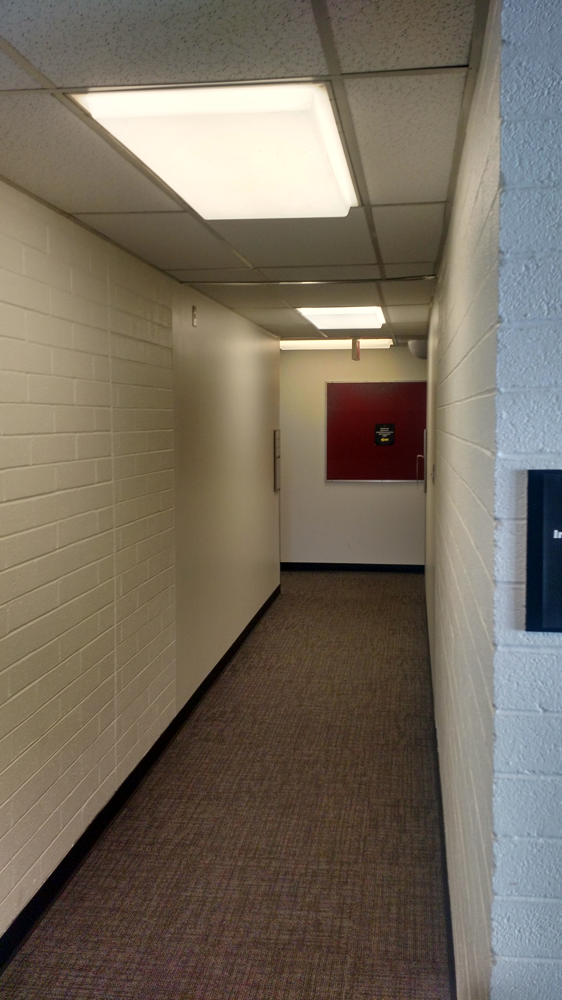
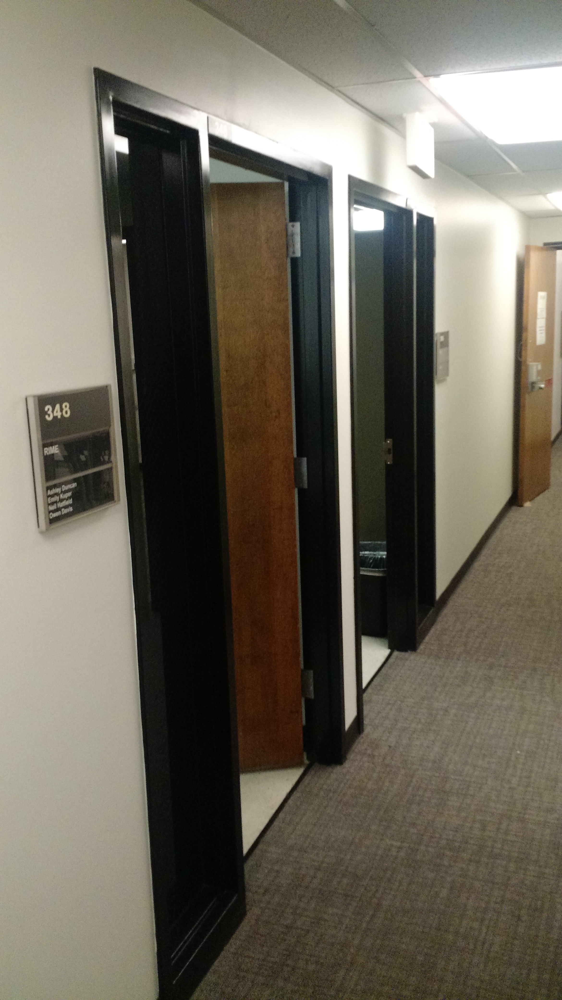

How to Find My Office
My Office is ECA348
My office is in Engineering Center, Wing A on the third floor. However, ECA can be tricky to find and the room numbering is not logically in the least.

ECA is located across from the Bookstore and Computing Commons and just down the Terrace Street from the Memorial Union. There are stairs on the West and East sides of ECA. I recommend the East Stair as it is closest to my office. It is also the stairwell with the elevator.
 The West Stair The East Stair
Once you get to third floor, you should see a long hallway. (This is from the East Stair.)

You will want to turn down the little hallway that you see pictured on the right. If you entered from the West Stair, walk down the hallway, past the water fountain. The side hallway that you will need to go down looks like this.

When you reach the end of this hallway, turn Left.

This is the hallway that I'm in. The first door on the left is my office (ECA348).
